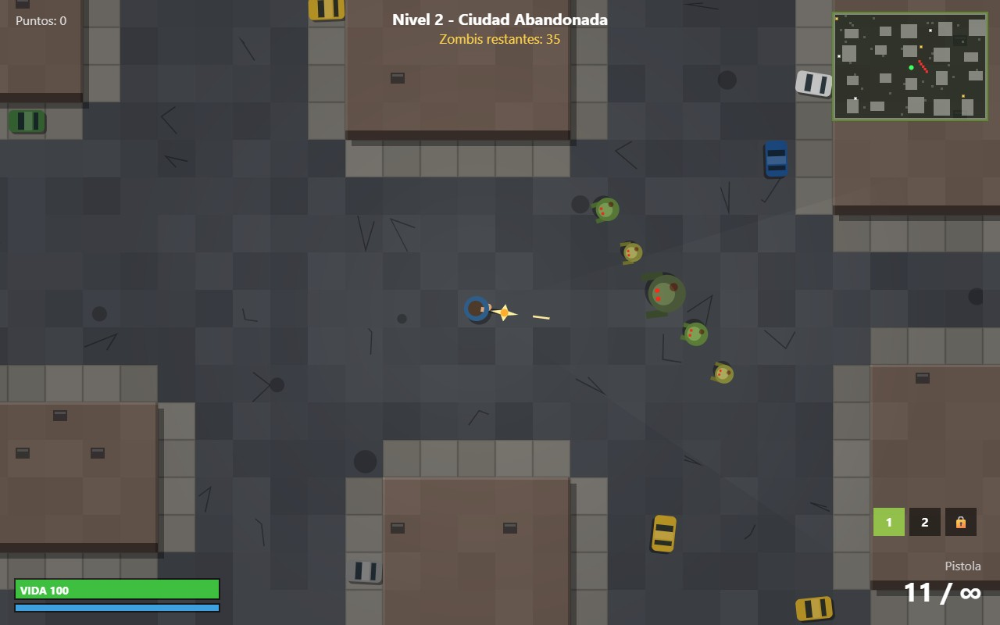
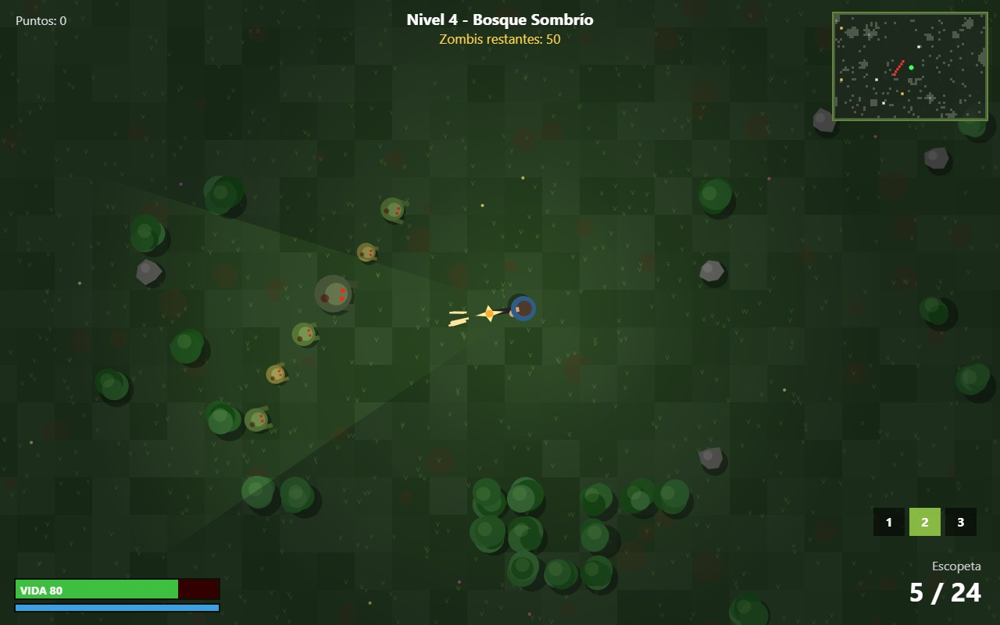
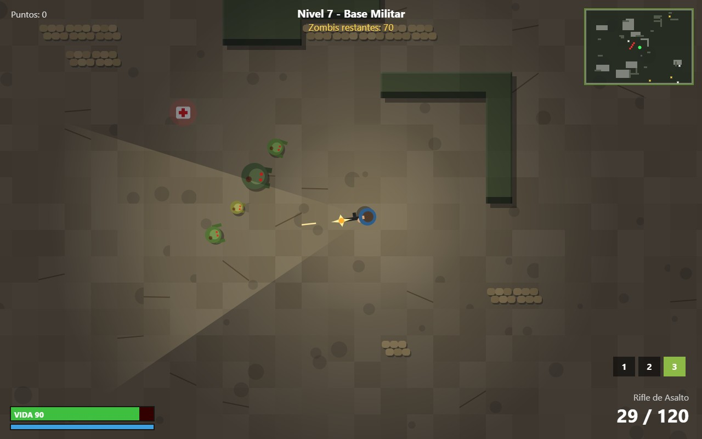

Índice
- Descripción del caso práctico
- Requisitos del sistema
- Contenido del paquete
- Instrucciones de descarga (USB / CD / Internet)
- Cómo ejecutar el juego
- Controles y cómo jugar
- Solución de problemas
- Desinstalación
1. Descripción del caso práctico
Zona Muerta es un videojuego de acción y supervivencia con vista desde arriba (top-down) en tercera persona. El jugador debe abrirse paso a través de una invasión zombi en un modo historia de 13 niveles distribuidos en 9 mapas, con misiones de eliminar, rescatar, defender y escapar. Incluye un modo supervivencia de oleadas infinitas, 9 armas, tienda con mejoras, compañeros, logros y niveles de personaje.
| Característica | Detalle |
|---|---|
| Género | Acción / Disparos / Supervivencia |
| Perspectiva | Cenital (vista desde arriba), tercera persona |
| Modos | Historia (13 niveles con diálogos) y Supervivencia (oleadas infinitas con récord) |
| Misiones | Eliminar zombis, rescatar sobrevivientes, defender el generador y escapar en helicóptero |
| Mapas | Ciudad, Hospital, Bosque, Centro Comercial, Laboratorio X-13, Metro, Base Militar, Aeropuerto y Cementerio |
| Clima | Lluvia, niebla, tormenta con relámpagos y ciclo de día y noche |
| Armas | Pistola, Escopeta, Rifle, Francotirador, Lanzallamas, Lanzagranadas, Minigun, machete, granadas y 2 legendarias (Rayo Láser y Ballesta Explosiva) |
| Trampas | Torretas automáticas, minas, barricadas y barriles explosivos |
| Enemigos | Zombi normal, corredor, tanque (embiste), vomitador (ácido), perros infectados, explosivo, gritón (llama refuerzos) y blindado (casco) |
| Jefes | 10 jefes con 2 fases (se enfurecen a mitad de vida): Carnicero, Enfermera, Alfa, Guardia, Experimento X-13, Conductor, Sargento, Piloto, Sepulturero y Rey Zombi |
| Progreso | Monedas, tienda, mejoras de armas, 7 skins, experiencia con 6 habilidades, 20 logros, estrellas por nivel, récords, bóvedas con llave y cofres |
| Compañeros | Soldado, médica, francotirador, escopetera y el perro Max; reciben órdenes (seguir, quedarse, atacar) |
| Sonido | Música dinámica, disparos de cada arma, recarga, daño, gruñidos, gritos, ladridos, lluvia, truenos y explosiones (generados por código) |
| Opciones | Volumen de música y efectos, dificultad (fácil, normal, difícil), autoapuntado, vibración y sensibilidad del joystick |
| Tecnología | HTML5 + JavaScript (se ejecuta en el navegador) |
| Clasificación sugerida | Adolescentes (violencia de fantasía) |




2. Requisitos del sistema
| Componente | Mínimo | Recomendado |
|---|---|---|
| Sistema operativo | Windows 7, macOS, Linux, ChromeOS, Android 8 o iOS 16.4 | Windows 10 / 11 · Android 12+ |
| Navegador | Chrome, Edge, Firefox u Opera actualizado | Google Chrome o Microsoft Edge |
| Procesador | Doble núcleo 1.5 GHz | Cuatro núcleos 2.0 GHz |
| Memoria RAM | 2 GB | 4 GB o más |
| Espacio en disco | 1 MB | 1 MB |
| Controles | Teclado y mouse · Bocinas o audífonos para el sonido | |
| Internet | No es necesario para jugar | |
3. Contenido del paquete
ZonaMuerta.zip
└── Juego_ZonaMuerta/
├── index.html ← archivo para abrir el juego
├── core.js ← sonidos y funciones básicas (no borrar)
├── mapas.js ← los 9 mapas del juego (no borrar)
├── datos.js ← armas, zombis, jefes, niveles y logros (no borrar)
├── audio.js ← música y efectos de sonido (no borrar)
├── game.js ← lógica del juego (no borrar)
├── ui.js ← menús, tienda y controles (no borrar)
├── manifest.json ← datos de la app para instalarla en el celular (PWA)
├── sw.js ← permite jugar sin Internet
├── icon-192.png ← ícono de la app
├── icon-512.png ← ícono de la app (grande)
└── LEEME.txt ← instrucciones rápidas
4. Instrucciones de descarga
Opción A — Desde la memoria USB o CD incluido en el empaque
- Conecta la memoria USB a un puerto de la computadora (o inserta el CD en la unidad de disco).
- Abre el Explorador de archivos (tecla
Windows + E) y entra a la unidad "ZONA MUERTA". - Copia la carpeta Juego_ZonaMuerta y pégala en tu Escritorio o en Documentos (clic derecho → Copiar; luego en el Escritorio, clic derecho → Pegar).
- Espera a que termine de copiarse y retira la USB de forma segura.
Opción B — Desde Internet (GitHub)
- Abre este enlace de descarga en tu navegador: https://github.com/JoseBlncxx/zona-muerta/raw/main/ZonaMuerta.zip
- La descarga empieza sola. El archivo ZonaMuerta.zip se guardará en la carpeta Descargas.
¿Prefieres jugar sin descargar nada? Abre https://joseblncxx.github.io/zona-muerta/ · Código fuente: https://github.com/JoseBlncxx/zona-muerta - Ve a Descargas, haz clic derecho sobre ZonaMuerta.zip y elige "Extraer todo...".
- Elige dónde guardarlo (por ejemplo, el Escritorio) y presiona Extraer.
game.js.Opción C — Instalar en el celular como aplicación (PWA)
Zona Muerta es una PWA (Aplicación Web Progresiva): se instala desde el navegador, aparece con su propio ícono en la pantalla de inicio, se abre en pantalla completa y funciona sin Internet después de abrirla una vez. Incluye joystick táctil, botones en pantalla y autoapuntado.
- Abre en tu celular el enlace del juego: https://joseblncxx.github.io/zona-muerta/
- Android (Chrome): toca el menú ⋮ → "Instalar app" o "Agregar a pantalla principal" → Instalar.
- iPhone (Safari): toca el botón Compartir (cuadro con flecha) → "Agregar a inicio" → Agregar.
- Abre Zona Muerta desde el ícono nuevo de tu pantalla de inicio y gira el celular en horizontal.
5. Cómo ejecutar el juego
- Entra a la carpeta Juego_ZonaMuerta.
- Haz doble clic en index.html. Se abrirá en tu navegador predeterminado.
Si se abre con otro programa: clic derecho → Abrir con → Google Chrome o Microsoft Edge. - Presiona F11 para jugar en pantalla completa (vuelve a presionar F11 para salir).
- En el menú, haz clic en JUGAR. ¡Sube el volumen para escuchar los efectos de sonido!
index.html → Enviar a → Escritorio (crear acceso directo).6. Controles y cómo jugar
| Tecla / botón | Acción |
|---|---|
W A S D o flechas | Moverse |
| Mouse | Apuntar |
| Clic izquierdo | Disparar (mantener presionado) |
R | Recargar |
1 a 9 o rueda del mouse | Cambiar de arma (solo las que tienes) |
V o clic derecho · G | Machete · Lanzar granada |
C · X · Z | Colocar torreta · mina · barricada |
O | Dar orden a los compañeros (síganme / quietos / ataquen) |
Shift | Activar / desactivar correr. Si se acaba la energía vuelves a caminar; presiona Shift otra vez para correr |
Q · E | Usar botiquín · Usar adrenalina |
P o Esc | Pausa |
M | Silenciar / activar sonido |
T | Activar / desactivar autoapuntado |
En el celular
| Control | Acción |
|---|---|
| Mitad izquierda de la pantalla | Joystick para moverse |
| Botón CORRER | Activa / desactiva correr |
| Botones 🩹 ⚡ 💣 | Botiquín, adrenalina y granada |
| Botones 🔪 · 🛠 / ⟳ · 📢 | Machete · Colocar trampa / elegir cuál · Orden a compañeros |
| Mitad derecha / botón FUEGO | Disparar (arrastra el dedo para apuntar a mano) |
| Botón R | Recargar |
| Botón ⇄ | Cambiar de arma |
| Botón II | Pausa |
Autoapuntado: si está activado (en el menú principal), el personaje apunta solo al zombi más cercano que pueda ver y lo marca con una mira roja. Está activado de inicio y se puede apagar en el menú.
Objetivo: en cada nivel cumple la misión (eliminar zombis, rescatar sobrevivientes o defender el generador) y después vence al jefe. En el último nivel escapa en el helicóptero. Recoge botiquines, munición, monedas y llaves 🔑 para abrir bóvedas con cofres. Dispara a los barriles rojos para explotar grupos de zombis. Con las monedas compra armas, mejoras, trampas y compañeros en la tienda. Al subir de nivel ganas puntos de habilidad (menú → Personaje). El progreso se guarda automáticamente en el navegador.
7. Solución de problemas
| Problema | Solución |
|---|---|
| La pantalla se queda en negro | Verifica que game.js esté en la misma carpeta que index.html y que extrajiste el .zip. |
| No se escucha el sonido | Haz clic en un botón del menú (el navegador activa el audio tras el primer clic). Revisa el volumen y presiona M. |
| El juego va lento | Cierra otras pestañas y programas, o usa Chrome/Edge actualizado. |
| Se abre en el Bloc de notas | Clic derecho en index.html → Abrir con → Chrome o Edge. |
| Perdí mi progreso | El progreso se borra si limpias los datos del navegador o usas modo incógnito. |
8. Desinstalación
Como el juego no se instala en el sistema, basta con eliminar la carpeta Juego_ZonaMuerta (clic derecho → Eliminar) y vaciar la Papelera de reciclaje.